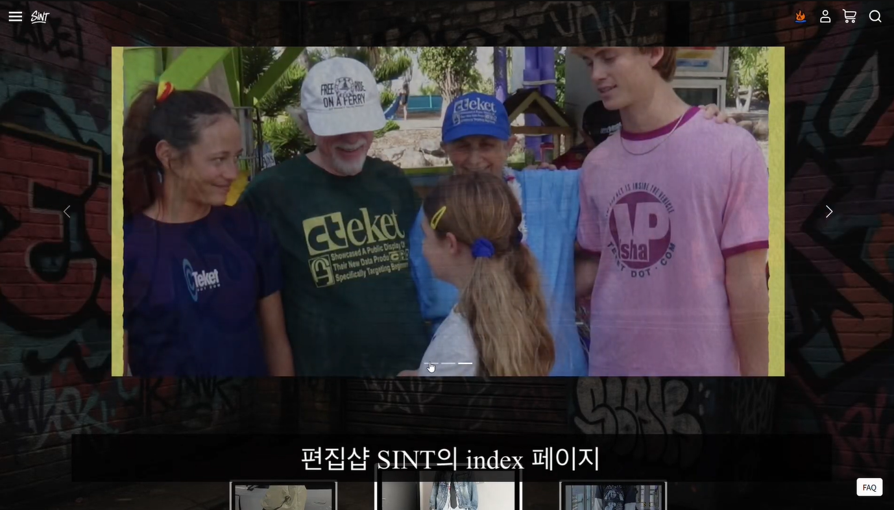
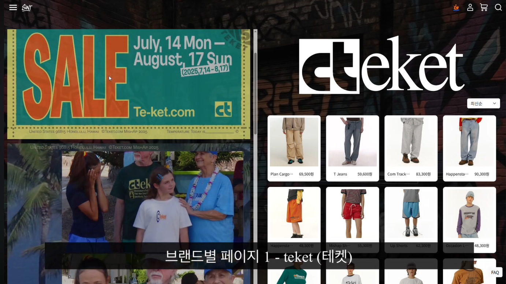
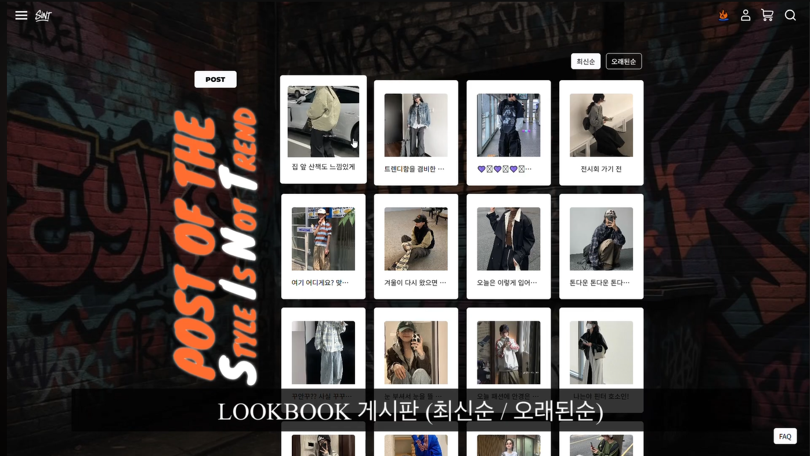

SINT
Spring Project
프로젝트 설명
상품검색ㆍ결제ㆍ게시판 기능을 합친 스트릿패션브랜드 웹 편집샵 쇼핑몰.
사용자관리ㆍ장바구니ㆍ찜ㆍ결제ㆍ브랜드/카테고리별 조회 및 정렬ㆍ검색 기능ㆍ
연관상품ㆍ최근 본 상품ㆍ룩북게시판ㆍ관리자페이지 등의 기능 구현.
담당 역할
FE총괄ㆍ와이어프레임 설계 및 모든 페이지 디자인ㆍThymeleaf를 이용한 서버 연동
담당 구현 페이지
Indexㆍ게시판ㆍ브랜드/카테고리별 상품목록ㆍ상품상세ㆍ검색
미리보기
( 자세한 내용은 상단의 링크를 확인해주세요. )


